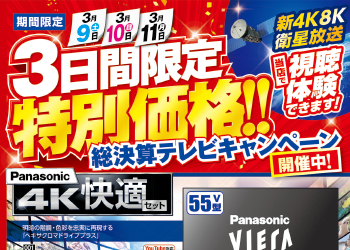
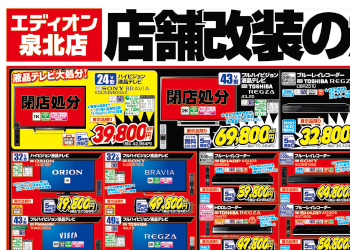
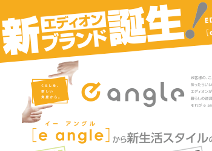
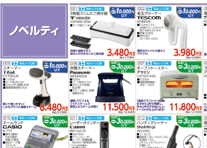
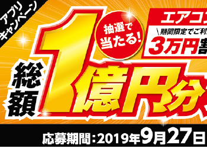

エディオン実績
概要：出向先のメインクライアントで、家電量販店のチラシ・カタログ・バナーなどを携わり制作物の制度、レスポンスの速さを高く評価いただきました。
-

▷ 映像VMDチラシ
エディオン各店舗で必要なときにプリンターで出力し使用するチラシで主にテレビやDVDなどの映像を売り出すチラシを担当させていただきました。
-

▷ 折り込みチラシ
Openチラシ、閉店チラシ、活性チラシ、全店舗チラシなど我々が普段目にすることの多いチラシの制作になります。制作は主に２人で表裏分かれ担当させていただいておりました。
-

▷ カタログ
新生活カタログ、エアコンカタログの新規制作が年に３回ほど案件が発生します。協力会社と共に制作しており、表紙や注釈事項は協力会社が制作で商品の入れ込みレイアウトは私が担当しております。
-

▷ 法人向けチラシ
BtoBに向けチラシで企業に対してのチラシということも考慮し、マスを均一にし統一されたカタログのような雰囲気を出して制作させていただきました。
-

▷ キャンペーンポスター(バナー)
年に３〜５回ほどキャンペーンポスターを制作し、その後Webに掲載するバナーの制作が発生しデザインのみ制作させていただきました。コーディングは他社に依頼となっており協同で案件にあたっておりました。